Archives : 2009-07
招牌菜 @ Jul 31, 2009
某晚在阿英煲吃饭，失望而归。
猪尾烧黄豆是阿英煲的招牌菜，除了甜之外没品出别的滋味。南京杭邦菜做的好的应该还是张生计。我父亲是无锡人，也不会给菜里放那么糖。几乎上来的每道菜都是甜的，不是厨师味觉有缺陷，就是厨师低估了客人的味觉需求。排队等翻桌还特别多，里面吵得要死。环顾四周，80%吃相惨不忍睹......不走运啊，不走运。
服务生：“因为糖非常便宜，他们就死放。”
“打包盒要收费吗？”我问。
“不收费，不过放心饭店肯定是赚回来的。”
“你怎么不帮自家饭店说话啊？”
“我打暑期工，月底就走。”服务生一脸轻松。

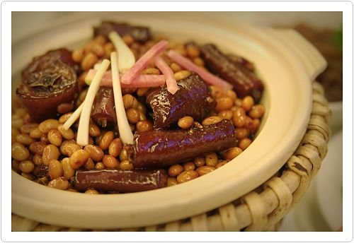
午饭准备了三个菜，烧饭汗流浃背，吃饭一转眼功夫，真让人惆怅！至少得用烧饭同样的时间来吃饭才让人得到些安慰吧？想想父母烧饭时，我是爱吃不吃，时常还用勉强的表情咀嚼饭菜....真是不懂事！现在恨不能每个吃饭的人，面露享受和感激之情。

一周的休闲装，REPLAY体恤+LA PARGAY缎面7分裤+昨天的凉鞋。

逛超市 @ Jul 31, 2009
如果可以在家附近的超市购买到所需要的食品的话，自然不会舍近求远下班后去麦德龙。南京有两家法国超市及一家德国超市卖杂货，还有N家国产苏果、华联、好又多.....最青睐德国超市麦德龙（METRO），货舱式销售，除了购物环境、服务因素，商品卖相比其他超市要好许多之外，在这里能找到其他超市买不到的食品，比如奶酪粉、金枪鱼、T骨牛排等等，停车也方便。晚上最满意新买的拖鞋：）搬了一箱摩卡咖啡冷藏在冰箱里，这个天喝冰咖啡也很爽。看到包装一模一样的阳山水蜜桃卖99.9元/箱，也忒贵了吧？
以前不会比较商品克重，后来看到有人在超市里除了比较价格外还会比较克重，当然不会因此而发财，但过日子不任意浪费，就是学习的榜样~晚上边看“反恐”边炖麦徳龙买回的牛后腿肉，牛肉炖好了接着炖小母鸡。因为看“反恐”生活质量一降再降，快成脱水蔬菜了，这也是下班后必须去超市大采购的原因。
喜欢人少的超市。

用随身携带的卡片机拍摄，拍了三张后便专注于货架的五颜六色了。

耳濡目染 @ Jul 30, 2009
七月的某个周末。
东郊某个公共汽车站。
一位男性外国人愁眉苦脸边看地图边对照车站牌。和朋友讨论了几句后停车，招呼他上车。路上得知他从意大利来中国旅行两周，之前去了HK、上海、北京、深圳，南京是最后一站。就职于意大利某保险公司，和PICC有合作关系。不可避免的会询问那里的经济，据说北方还能正常工作，南方被黑手党控制着....他问南京有哪些支柱产业？......房地产？钢材？无法回答，只好转移话题说中国GDP有7%的增长（来自官方报导的数字）...
打电话给别人，对方说：“钱赚钱，比人赚钱要快。”
忙了一下午，终于停下来喝口茶，看到这篇文章，转载如下：
——我开始担心中国经济——
本文作者是摩根士丹利亚洲主席
他的新书《未来的亚洲》(The Next Asia)将于今年9月由Wiley出版社出版
从表面上看，中国似乎在引领世界从衰退走向复苏。在2008年年末增长陷入实质上的停滞后，至少按照环比衡量，中国的经济增长在2009年春季急剧加速。
根据粗略计算，2009年第二季度，中国可能为经通胀调整、折合成年率计算的全球产出增幅贡献了高达两个百分点。随着其它地区的收缩放缓，中国经济的反弹本身足以使得全球国内生产总值(GDP)自去年夏季以来首次实现小幅正增长。
这是好消息。坏消息是，中国最近的增长代价高昂。由于担心近期经济滑坡将会加剧，中国决策者在制定宏观战略时选择了数量胜过质量的战略，其中最主要的是由井喷式的银行贷款融资的基础设施支出大幅增长。
当然，发展中国家总是需要更多的基础设施。但是中国在这方面走向了极端。在中国近期实施的4万亿元人民币（合5850亿美元）经济刺激方案中，基础设施支出（包括四川地震重建支出）足足占据了72%的份额。中国政府敦促银行加速为刺激计划提供融资。银行照做了。2009年头六个月，银行新增贷款总额达到7.4万亿元人民币——是2008年上半年的3倍，也是有史以来最为强劲的半年度信贷增速。
这种受银行控制的过度投资刺激无疑表明，2008年末和2009年初的中国经济是何等的糟糕。由于发达国家罕见地同时出现衰退，一场前所未有的外部需求骤降，摧毁了以出口为导向的中国增长机器。这导致依赖出口的广东省逾2000万民工失业。长期关注社会稳定的中国政府采取行动，阻止了局势的恶化。中国政府决心采取一切手段来恢复经济的快速增长。
然而，这些举措不可避免地造成了破坏稳定的后果。不断飙升的投资对2009年上半年中国GDP增长的贡献率达到了空前的88%——是过去10年43%均值的两倍。同时，中国各银行的贷款质量多数确实受到今年上半年大量信贷投放的影响——这一趋势可能为新一波银行不良贷款播下了种子。就在本周，中国监管机构告诉银行，新增贷款必须用于推动实体经济，而非用于股市和房地产市场投机。
两年多前，中国总理温家宝曾警告称，中国经济正变得越来越“不稳定、不平衡、不协调、不可持续”。 这是先见之明。然而，中国没有针对这些担忧采取措施，实施促进消费的调整政策。相反，渴望增长的中国却受到全球贸易繁荣的引诱，在最不平衡的行业加大了赌注。在2007年以前，投资和出口占中国GDP的80%左右。如今，面对严重的全球衰退，中国却让温总理警告过的那些问题更为恶化：将受流动性推动的巨额刺激方案瞄准了最不平衡的行业。
这对任何经济体而言都是不可持续的——或者无法为全球经济提供可持续支持。中国必须让经济增长转向国内私人消费。这可能需要在增长规模上做出妥协。但鉴于这会改善中国经济的质量，在增长方面做出短期的牺牲还是非常值得的。
与大多数人不一样，我一直坚定地看好中国经济。然而现在我开始担忧了。加剧令人担忧的失衡状况的宏观战略最终会导致失败。从很多方面来说，这正是2008年至2009年全球危机和衰退的原因所在。中国不会从这种后危机时期的最关键教训中获得特赦。
*茶* @ Jul 30, 2009
特别喜欢这个放茶叶的罐子，从ANGIE那里搜刮来的小物件。
与那些热爱咖啡的MM相比，我更热衷于喝茶。

今天如此繁忙，就象橡皮人，可以很忙很忙，也可以很闲很闲。可以很富有也可以很贫穷。如此凉爽的天气心情怎么也清爽不了，有压力的工作让人变得暴躁不安。
Decoster裤子+小店买的无牌体恤+前年的凉鞋
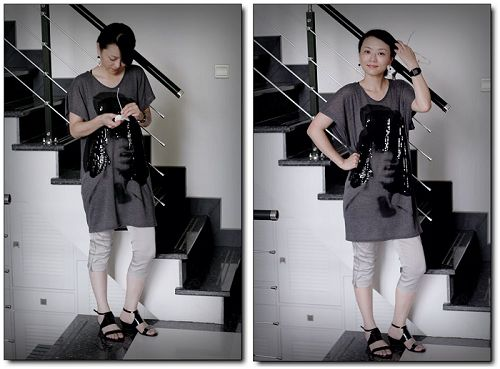
送．桃．子 @ Jul 29, 2009
“我要吃桃子，晚上请你吃饭？”女友说道。
“不想出去，想回家，不见。”
下班前工厂又送来两箱桃子，决定必须将桃子送掉，如果来不及吃烂了就太可惜了。这世道自觉懂事的人越来越少，收到桃子的人皆回送以小礼物，啧，啧，啧，都是家教很好的女孩子啊！最后一箱桃子送的颇费周折，转了好几个街口才找到她公司，想到她正吃着山珍海味，悔得我肠子都绿了，早知道答应一起吃晚饭了。饿得我回到家立刻拣了只最大的紫薯吃。
蚊子回送的日本小南瓜，给我真是可惜了，她应该自己留着吃。

紫薯，比红薯密度高，吃一个就饱。感觉跟压缩饼干似的。

最高兴的是见到蚊子收养的流浪狗ZAKKY，眼睛会说话，象极了妞妞。ZAKKY比LUKE小一号，好象还是青少年的摸样。比较之后才知道LUKE真的是好壮啊。

最近感到好累，永远有睡不醒的觉。上午请了半天假睡觉。必须起来上班时还是觉得累。我姐姐说我脸色很差，天天熬夜看“反恐”能滋润吗~
依然是我家餐厅，背后是具有防水功能的不锈钢马赛克，我非常得意的创作。
Decoster 制服裙，原配腰带，裙子面料有弹性。
（明天还有女友的小礼物照片）
凉爽如秋，只想“反恐”。 @ Jul 28, 2009
日子每天一样的过，饭每天还是一样的烧，然而自然届失去了夏天的感觉，让人怀疑真的入伏了吗？好几天的温度在30以下，这么凉爽的天气看“反恐”最舒服了。
可是“反恐”的日子让人活得匆忙，昨晚居然忘带LUKE出去散步，一早见它急急站在门口，可我一分钟也耽误不得，胡乱抓了棉麻裤子配体恤就出门了。出门前对它说：“你再忍忍，忍忍啊，中午回来带你出去。”这家伙居然真憋到我回来！
应该放缓“反恐”节奏？避免审美疲劳，串改剧情，说实话有关昨晚剧情的具体细节在我脑子里已经没有逻辑了。
最近对蔬菜有好感，一盘黄瓜、胡萝卜就着色拉酱都被我一人吃光；

好看的南京烤鸭。

手撕包菜。在饭店里吃过，回家想象着烧了几次，味道还不错哦。 这次没有放糖，还是要放点糖的，避开包菜特有的淡淡清苦味。

有人天天钓鱼，有人就经常有免费鱼吃，还养活外面好几只流浪猫。想起老爸周末烧的鲈鱼，回头问人家：“有没有钓到鲈鱼啊？”“那得看鱼塘里撒的什么鱼苗呢，估计就这种草鱼多。”

在餐厅里等煮熟的米饭，这个餐厅只有黑、银灰和红三种颜色。
半天功夫，Decoster的棉麻裤已经变得皱巴巴了。

ANGIE问我是不是胖了，证实了我的怀疑，真的胖了。

水蜜桃的伤 @ Jul 27, 2009
同事在南京买了6只所谓的无锡水蜜桃，花了18元。假的！
如何辨别真正的阳山水蜜桃？
1、一定是12只/箱；
2、12只桃子个头大小差不多；
3、桃子皮轻轻用手撕即能撕掉；
4、色泽鲜嫩，果肉多汁；
5、70~90元/箱。
俗话说：桃饱人，杏伤人，李子树下埋死人。下班回家饿得不行的情况下，会先吃只冰凉的桃子抵抵饱，然后再去做事。年年夏季的水蜜桃大派送，难怪有人嚷嚷着吃伤了~今天又有桃子送来，冰箱里还有没吃完的。难道夏季最好的礼物就是送桃子？


大多数时候我象只大虾米一样，驼着背。大概这个姿势让人可以完全没有任何负担的松弛，处于最自然状态中。卖点破绽，卖点破绽啊！

看“反恐”看得专心，连衣裙的腰带早晨是万万没时间找的，随手系了前面宽，背后窄的所谓“糖果”腰带。不晓得为什么起这么个嗲兮兮的名字？
天天．反恐 @ Jul 27, 2009
《反恐24小时》迟迟不看就是怕进去了出不来。上周同事递给我拷的第一季，鬼使神差地看上了，用工作日三个晚上看完第一季，第一天凌晨3点睡，第二天凌晨1点睡，第三天晚上12点左右睡，熬夜能力一天不如一天。可是欲罢不能，于是买回7季的所有碟片在家继续看。
这个周末看到第三季，有关生化病毒的剧情。不晓得连续剧是害人还是喜人，周末啥事没干就窝沙发上盯着电视，还是件体力活，累啊，期间换姿势无数。我现在满脑子都是杰克·鲍尔，没看这部剧之前读过有关Kiefer Sutherland的大篇幅介绍，感情路上坎坷，虽然“24小时”令他名声大噪，但他演出的电影却反响平平，直到08年《Mirrors 》（鬼镜）的出演，那真是匪夷所思的恐怖，太恐怖！太恐怖了！以至于看完后的几天里不敢多照镜子，也尽量不去看玻璃或水中的倒影....有胆大的可以找这部电影看看。
好喜欢金帕丽·鲍尔扮演者Elisha Cuthbert，哦~她的胸部太美了，一头漂亮的金发，瓷瓶般的肌肤，虽只有160CM高，然而她的身材完全可以使人忽略她的身高，加上她的气质，给人既性感又纯真的印象！但凡有吸引力的女人虽拥有美好的条件，却不卖弄，就更增加了她的魅力。看完反恐打算找她演的剧来养养眼。Elisha出演的影片有《真爱至上》(Love Actually)、《单身男子俱乐部》(Old School)、《沉默的秘密》(The Quiet)、《恐怖蜡像馆》(House of Wax)、《猫的传说》(Cat Tale)、《邻家女孩》(The Girl Next Door)和《冲突》(Conflict)等。去年她主演了 《我的野蛮女友：美国版》，翻拍自韩国影片《我的野蛮女友》。
讨论为什么会着迷“24小时”？
影片永远分平民社会、政治阶层和安全机构三个面来演绎。大量完全陌生领域的信息内幕，想象不到的政治、特工、恐怖活动，人家玩大的，连行刑手法也是你想象不到的，大到你完全没有说话的份儿，你只有“看和听”。不要做特工梦啦，老老实实做小百姓。想想那些个玩大政治大阴谋大恐怖大特工的，要精神分裂，才能玩得好啊？！
2010年1月“24小时”要出第8季，这季反恐反到联合国啦！
争取今年8月底前把前7季看完。
Elisha Cuthbert

light in the box @ Jul 24, 2009
推荐给少爷。

light in the box是B2C网站，海外可通过它购买中国零售商品，批发皆可。
“文心”为该公司创始人之一，去年来宁出差见面时听他介绍他们的资金来自风投，如果我没记错的话。第一年出口额达千万美元，对于刚起步的外贸在线邮购业务来讲做到这个数字实属不易。听他说了件有趣的事，一次他和一个伊拉克客人在线谈业务，对方要订口罩，而客人四周炮火连天。。。辛苦的是即使客人定购一个很冷门的商品，工厂不接单的情况下，他们也会去大市场寻找买回并寄出。。。。这在我们看来简直不可思议，不过他们的利润率应该比较高，毕竟是零售，相对于国外售价还是便宜的。
该网站支持美元、欧元、英镑、瑞士法郎、澳元、港元、加元等货币支付，但是目前尚不支持人民币。网站还利用谷歌的翻译技术，可以将以英文为基础的版本翻译成法语、意大利语、西班牙语、丹麦语、荷兰语、德语等（不过仅仅是参考而已）。
Light in the box，盒子之光？另辟蹊径，做阿里巴巴等其他几家主要针对海外商家的B2B之外的B2C。据网站介绍，Light in the box借鉴了Jack-in-a-Box。盒子之光作为中国面对国际市场的在线零售邮寄商的领军者，一点不为过。
少爷，如果你想购买挂烫机的话，试试这家网站的服务能力。
挂烫机 @ Jul 24, 2009
这篇专为SmileMM所写。
家里虽有熨衣板，且闲置时折叠在橱柜里一点不占地方，但还是在卓越网购买了贝尔莱德挂烫机，放在衣帽间里使用。尤其熨春夏秋轻薄的、皱痕浅的衣物，挂烫机的优势就显现出来了，每天使用也方便，打开开关约20几秒蒸汽便漫出来，根本用不了说明书上的45秒。配件有毛刷、专门熨裤缝的塑料夹，可惜没有配备挂衣架。我买的挂烫机358元，性价比不错，目前还没出过问题。
散件，按图纸安装，不难。
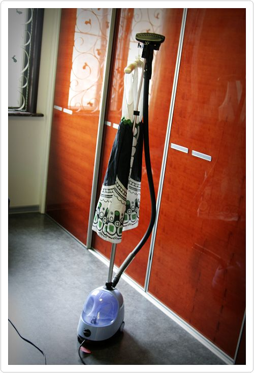

大约10平米的房间，被橱柜用去部分后，变成一个小房间。瞧，那个小跟屁虫趴在我的脚后面，粘人的很呐~

钟点工阿姨拍了十几张就这张还算清楚。。。差点说出要她去上摄影课的话。。。
有了挂烫机之后，这件Decoster丝绵面料的长裙可以增加穿着频率，并放下顾虑多多使用真丝衣物。顺便推荐一下我喜欢的Decoster品牌，很有设计感。几年前卖到日本市场，颇受顾客推崇，南京新街口金鹰店有售。

掘．墓 @ Jul 24, 2009
NANA传来她和小卫在镇江表演的SALSA视频，NANA头发烫了，小卫医学专业研究生也毕业了，他俩的舞技日渐提高，不过好象没发现多少新动作。搁置SALSA半年，怪想的。不过想到每周那么多的PARTY心里就发悚，如果课程安排多于PARTY，且每两堂课有新动作教，会更满足。想去学国标标准舞，据说学好了再回头学习SALSA舞会更有范儿。无论什么范儿，我永远改不了芭蕾基本功的范儿，这是弊病！跳舞真的比任何健身都让人快乐，同时也健身了！
***NANA、小卫镇江的SALSA表演；
镇江的SALSA表演
***掘地三尺将去年年底和SAMBA老师、NANA排练的视频贴回来怀念一下。那个拖节奏的白衣人就是我啊，忘动作啊忘动作啊。排练第四次拍的视频，那时还是长发呢：）终于可以不用看平面的茶了。
女子三人舞排练
***贴一段Griselle Ponce & Andy Cruz的SALSA表演，很喜欢这段舞蹈，火辣辣地散发着激情和活力，女人的妩媚与性感是天下最美好的感受之一，千万不要把自己搞成干巴巴的僵尸样儿。事实上双人舞能找到一个从身高到体型并且配合默契的舞伴儿并不容易。
Scandinavian Salsa Congress
叔本华的钟摆论 @ Jul 23, 2009
人生就是在痛苦和无聊这二者之间像钟摆一样摆来摆去：当你需要为生存而劳作时，你是痛苦的；当你的基本需求满足之后，你会感到无聊。
叔本华认为，人生的本质是痛苦。人生之所以注定要痛苦，首先是因为人无法逃避死亡。人生最大的恐惧就来自对死亡的忧虑。他说，人生就好比吹肥皂泡，尽管明知一定要破灭，却还是要尽可能吹下去，吹大些。叔本华还把生命本身比作是布满暗礁和漩涡的海洋，人生有如怒海行舟，虽然他总是小心翼翼地、千方百计地避开暗礁和旋涡，但最终等着他却是再也无法避开的“船沉”，即“死亡”。人生如斯，岂不痛苦？
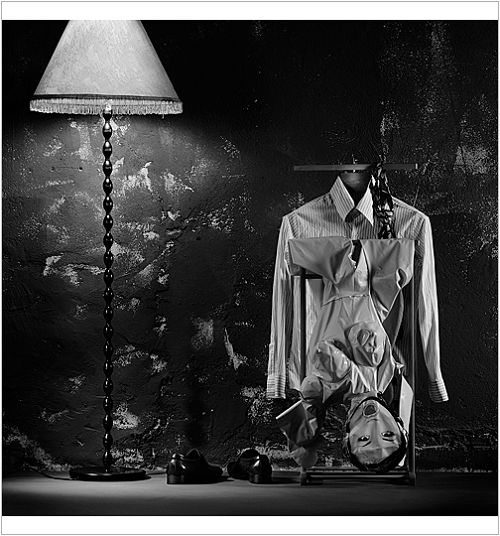
那么是否放弃这种理智的思考就可以免除人生的痛苦呢？不能。因为痛苦的根源在于意志而不是理智。意志的本质就是盲目的欲望和不可遏止的冲动。当欲望得不到满足，人便感觉痛苦；而一种欲望得到了满足，留给人的又是什么呢？叔本华认为，愿望的实现很快就产生饱和：目标只是形同虚设“占有一物便意味着一物失去了魅力。”欲望就是这样一种东西，它的满足却总是暂时的、有限的。当愿望满足、幸福旋即消逝之后，叔本华指出，新的欲望就会继之而起，欲望总是满足一个又引起十个，永无终止，这样欲望就永远无法得到满足，也是痛苦。痛苦就是人生所不可避免的。叔本华认为，人生有如钟摆，摆动于痛苦和无聊之间，痛苦和无聊是人生最后两种成分。
*********************************************************
看完钟摆论，弱弱地自言自语一句：死亡并不痛苦，痛苦的是生命的过程？
Who wanna get fucked up? @ Jul 23, 2009
patron tequila 献给夏季的暴雨天。
听着这首歌驾驶着奥特曼在暴雨里，真TM过瘾！
patron：早期昂贵的龙舌兰酒的著名品牌。
tequila：是一种蒸馏酒，龙舌兰，听说这酒不能纯喝，需加柠檬和盐。
Let's go!
Hey!
What's happenin'?
What you drinkin' tonight girl?
Drinkin' tonight with me!
Put your drinks up!
(Chorus-Aria & Lil' Jon)
Hey girl
Where's your drink?
We goin' all get real drunk tonight
Hey girl
I got bud we can all get fucked up tonight (get fucked up tonight)
By the end of the night
Imma have you drunk and throwing up (hey! )
By the end of the night
Imma have you so fucked up! (have you so fucked up)
(Verse-Chelsea & Lil' Jon)
They said what you drinkin'? (what you drinkin'?)
Let me buy you a couple of rounds
And I said what you thinkin'? (yeah! )
I ain't the type of girl to get down
But I can party wit cha (uh huh)
And bring my girls aside (uh huh)
Tell the bartender bring the ice
And let 'em know I'm on Patron
(Chorus-Aria, with ad libs by Chelsea & Lil' Jon)
I'm on Patron, Tequila
I'm drunk on Margarita (on Margaritas)
That Patron, Tequila (that Patron)
Me and my mamacita (yeah! ) (me and my mamacita)
Hey girl (hey girl)
Where's your drink?
We goin' all get real drunk tonight (get real drunk tonight) (real drunk tonight)
Hey girl
I got bud we can all get fucked up tonight (get fucked up tonight) (yeah)
By the end of the night
Imma have you drunk and throwing up (hey! ) (throwing up)
By the end of the night (oohh)
Imma have you so fucked up! (so fucked up! )
(Verse-Lauren & Lil' Jon)
And now the parted heated
'Cuz I got a hot girl in the club
I'm feelin' so conceited (yeah! )
'Cuz everybody is giving me love (uh, uh)
But hold up, wait a minute (uh huh)
'Cuz my cup is going empty
I need someone to refill me
I'm trynna to get drunk (me too)
(Chorus-Aria, with ad libs by Lauren & Lil' Jon)
I'm on Patron, Tequila (yeah, yeah)
I'm drunk on Margarita
That Patron, Tequila (yeah, yeah)
Me and my mamacita
Hey girl (hey girl)
Where's your drink?
We goin' all get real drunk tonight (get real drunk tonight)
Hey girl
I got bud we can all get fucked up tonight (get fucked up tonight)
By the end of the night
Imma have you drunk and throwing up (hey! ) (throwing up)
By the end of the night
Imma have you so fucked up! (so fucked up! )
(Bridge-Aria, Lil' Jon, Chelsea & Lauren)
Who wanna get fucked up? (I do, I do)
Who wanna get fucked up? (I do, I do)
Who wanna get drunk? (me) (me)
Who wanna get drunk? (I'm already drunk) (me)
Who wanna get fucked up? (haha) (I do, I do)
Who wanna get fucked up?(I ain't stopping them) (I do, I do)
Who wanna get drunk? (me)
Who wanna get drunk? (let's have another one)
(Chorus-Aria, Lil' Jon, Chelsea & Lauren)
I'm on Patron, Tequila
I'm drunk on Margarita
That Patron, Tequila (yeah, yeah)
Me and my mamacita (put your drinks up! )
Hey girl (hey girl)
Where's your drink?
We goin' all get real drunk tonight
Hey girl
I got bud we can all get fucked up tonight
By the end of the night (repeating Aria)
Imma have you drunk and throwing up (repeating Aria)
By the end of the night (repeating Aria)
Imma have you so fucked up! (Imma have you so fucked up! )
(Lil' Jon)
Put your drinks up!
Put your drinks up!
Put your drinks up!
Put your drinks up!
(Aria)
I'm on Patron, Tequila
I'm drunk on Margarita
That Patron, Tequila
Me and my mamacita
我爱下雨天。

雨停了。
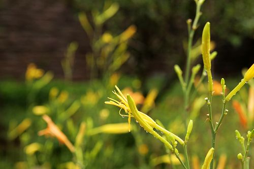
这张照片专为蚊子拍摄。
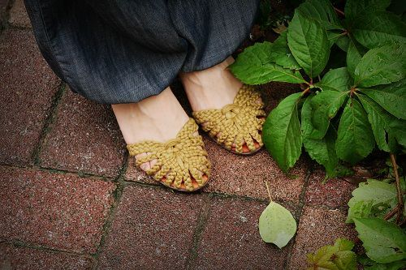
两周前的花谢了。

头上长犄角的小奥特曼。
苦中作乐 @ Jul 22, 2009
做可口饭菜不易，尤其在酷暑难耐的夏天。常常从厨房出来浑身是汗，额头滑落的汗珠刺激着眼睛，即使这样在家吃饭总好过外出就餐。然而麻烦总是不断，做多了吃不掉，做少了又增加烧菜的频率，不可避免的倒菜时有发生。看到Maggie的夏日宣言“将冰箱里所有剩食全部倒掉”那段深有同感，不过她在外觅食的经历似乎并不畅快。也许到老爸老妈那里蹭饭是上班族解决问题的最好途径？
周一晚上和David在1912附近的京采餐厅用餐，依然七个碟子八个碗，环境尚好，菜的口味尚好，但那种氛围下熟悉的浮躁却令人不适。下暴雨的时候想回家，外面的浮躁也让人立刻想回家。确信自己有段时间患上焦虑症，近期或许社交恐惧症又找上门来？有没有一种生活可以避开这浮躁而令人焦虑的世界？只要工作就必然要接触各种各样的人和事。即使你呆在家里也会有官司找上门来！况且这世界小丑那么多，避免了A问题还有B问题，大概人生本来就是如此纠结？谁也躲不过？好吧，就让我们一起苦中作乐吧！
中饭烧了两个菜，茄子的口味总没有预期的满意，不过木耳菜始终没令我失望过。配上紫燕的藤椒鸡，夏天的午饭解决了。

total solar eclipse @ Nanjing @ Jul 22, 2009
日全食这天南京下暴雨，不过同事们还是很兴奋地站在走廊尽头的窗户边迎接早晨的黑暗。9点钟的马路上渐渐亮起路灯，新闻再三强调要注意行车安全。同一个地方平均要300年才能见到一次日全食，那么下一次日全食将是2309年，300年后写博看博的人灰是灰，尘归尘了。。。相对这场天象盛宴我更喜欢下暴雨，那种天气下令人更享受家的安逸。整个自然界就象是一套内分泌系统，日全食会影响到潮汐影响到动植物，不知道股市是不是也会受到影响？
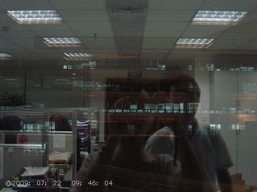

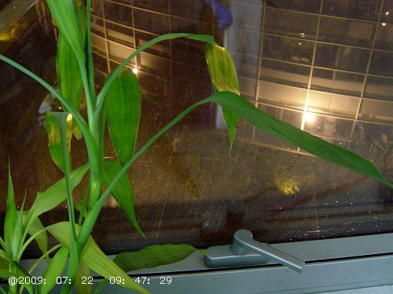
名义重要吗？ @ Jul 16, 2009
昨天三个人辞职，经济危机时期辞职出去单干，显然不是钱的问题。
今天会议上谈到“名义很重要吗？”
会后问他人：“你觉得呢？”
“不重要，他哪一年拿的钱不比某人多啊？！你觉得呢？”
“重要。”我说。
好比一个男人同时和两个女人交往，和其中一个结婚。另一个则从恋爱对象转变为二奶角色，即使二奶得到这个男人更多的爱和实惠，她依然是寄人篱下、名不正言不顺的二奶。愿意一辈子给人做二奶，那真是让人肃然起敬的二奶。一个有能力做大奶的二奶，必然要反抗，必然要去改变现状。但凡现象背后总有不为人知的目的，所有看似结果的结果也都只是暂时状况。女人首先断了一段腐烂的关系，她将得到最大的尊严。这个世界上，每天都有誓言被抛弃，也总有一些会兑现。有时认真总带来伤口，而轻浮却能快乐。
下面的哲理故事很有意思：
1、孔子的一位学生在煮粥时发现有肮脏的东西掉进锅里，他连忙用汤匙把它捞出来，正想把它倒掉时，忽然想到，一粥一饭来之不易，于是便把它是了。刚巧孔子走进厨房，以为他在偷食，便教训了那位负责煮食的同学。经过解释，大家才恍然大悟。孔子很感慨地说：“我亲眼看见的事情也不确实，何况是道听途说呢？”
启示：找出事情真相，不是轻易相信谣言。
2、乌鸦站在树上，整天无所事事，兔子看见乌鸦，就问：“我能象你一样整天什么事都不用干吗？”乌鸦说：“当然，有什么不可以呢？”于是，兔子在树下的空地上开始休息，忽然，一只狐狸出现了，它跳起来抓住兔子，把它吞了下去。
启示：如果你想站着什么事都不做，那你必须站的很高，非常高。
***********************植物带来的喜悦************************
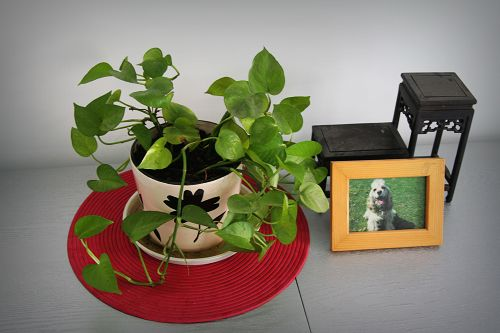
这盆绿萝起先用水栽培，从小小的绿叶到一点点长大，一点点长出无数的须根。上周把这些绿萝栽进花盆，日日担心它是否能坚强存活下去，每天用手摸一摸它的茎干叶片，感受它是否茁壮。到了这周便没了担忧，它已经适应花盆里的生活，越发滋润了。
早．晚 @ Jul 14, 2009
***晚***


来了一个女孩儿，89年出生，未成年开始做模特。现在在1912酒吧里做酒托儿，就是酒吧招些所谓年轻漂亮的女孩子，整夜坐在酒吧里吸引（招揽）男人们能常常光顾，并且她们会促进男人们消费，并从中获得提成，月收入4、5000元，她的BF因为贩毒被抓进去了。晚餐刚刚开始她便呈现出醉意，眯着眼睛，眼神飘忽不定，每5句话中必定带着脏字。她的“醉意”却并不是因为酒精。。。
我：“你下班的时候已经没有车了，怎么回家？”
她：“我爸来接我。”
我：“你当着你父母的面也抽烟？”
她：“对啊，我爸还发烟给我抽呢。开始反对，后来我经常带好烟回家，我爸跟我要，渐渐就不反对了。”
我：“有很多客人会约你吧？”
她：“一般不罗嗦。”
。。。。。。
她无所顾忌的表情看着既天真又快乐，丝毫看不出生活能给她造成什么负担，不时掏出手机来收发短信。我忧心重重地望着她，没了过去的憎恨和鄙视，只有轻微的心痛和同情。
***早***


这段时间空气又闷又热，如果不开空调，总感觉呼吸不畅似的。就要出梅了，下面会是连续的高温，担心中午遛它，它会中暑，没准儿人也会中暑呢？所以今早七点四十就带LUKE出门了，穿上体恤短裤带上MP3，边走边听早间新闻。
早晨静谧而凉爽，有令人熟悉而愉快的味道，我们俩迈着轻盈的脚步悠闲地路过小水渠穿过花园小径，回家后洗澡换衣吃早点出门上班。这样的早晨比睡懒觉令人喜悦！计划以后进行慢跑之类的晨练，提高体质对现在的我很重要。
拍．宝贝 @ Jul 13, 2009
周末洗车的路上，听到101.7频道播了一档节目叫《豆豆向前冲》，讲宠物的。
说某教练家里有只哈士奇，他的教育方式就是打，有一次狗狗在外面拣东西吃，被他用脚踩用拳头夯。狗狗趴在地上留眼泪，从此后只要教练在它就不会在外面吃东西，包括别人给它的。有次有人给它食物，哈士奇先环顾四周看看教练在不在，不在就吃，在就不吃....这样的教育方式挺吓人的，我是下不了手！
广播里提到“大中桥溜狗大队”，主人宠物一起约着出去玩，太有意思啦~
有时外出吃饭，真想把它带上，可是一般的餐厅是不允许狗进去的。
象我这样想法的主人一定不少，如果南京搞个宠物餐厅、宠物公园，让主人和宠物一起happy，会有些生意吧？
刚睡醒就被折腾着拍照；
拍就拍吧，还是很配合滴；

换个角度，瞧瞧我的品种是不是很纯呢？

等冬天长出长卷毛，还是超级帅哥。
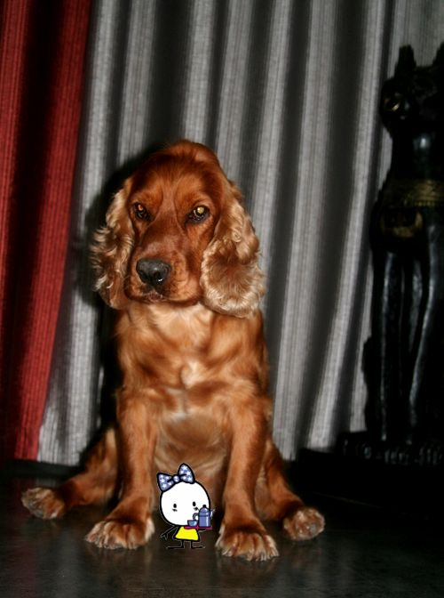
周末看碟 @ Jul 12, 2009
周末看了两部碟《Defiance》（反抗军）和《新宿事件》。
《新宿事件》被禁可能与片头中国人偷渡情节有关，实在是壮观！片子介绍90年代初是大陆偷渡去日本的鼎盛时期，后经济发展，偷渡潮才逐渐消退。该片通过UUSEE即可看到视频，不过还是买了DVD回家。
这次成龙大哥在该片中奉献他的诸多第一次，第一次不打，第一次演坏人，第一次杀人。老徐演成龙大哥的旧情人，嫁给黑帮老大生下一女，和服真比中国古装适合老徐，衬托地老徐楚楚动人。老徐应该和我同年吧，还持着青春期的声调甚是悦耳，20岁还是30岁对她无非是数字变化罢了，从A电影到B电影再到第N部电影，我看老徐都是一个样儿，角色变化了演技没变化。片中的吴彦祖和范冰冰起着美化画面的作用，看不出更多的彩儿。更喜欢那个留着两片胡子的胖子中国人，后来被自己人杀死，以及饰演老徐丈夫的黑帮老大，这两人的演技我个人观点还是有点看头的。
据说导演尔冬升用了三年时间来收集新宿的相关素材，那个歌舞伎町的夜城市，也有我的一丝丝一些些印象。新宿SUMITOMO被称为东京的副中心，位于市区西南部，这里既有现代的流行摇滚，也有古典音乐及歌舞伎演出。那些花街柳巷，用日本话说叫“欢乐街”。兴盛的色情业，出没其间的明星富婆们，给新宿这“日本第一繁华街”增添了别样的风情......总体来说值得买来一看，如果把这部片给从日本留学回来的同事看，他们会是怎样的感受？
《Defiance》的男主角是现007扮演者Daniel Craig，又是一部犹太人的血泪史。讲述弟兄四人如何领导几百个犹太人在森林中东躲西藏度过了两年多被猎杀的危险与苦难，他们一直坚持到战争结束，这个森林中建立的社区最后发展到1200人，全部躲过纳粹的毒害。因为Daniel Craig的出演，这部电影多了些让人寻味的东西，还不错。看的时候我在想，万一某一天面临如此灭顶之灾，是不是能象他们一样坚强的活下去？看来时常学习点儿野外生存技巧并没坏处，也许某天就用上了呢？
在“味千拉面”解决周末最后一餐；

天色渐渐暗下来，灯笼渐渐亮起来，对比着很好看；

培根里面卷着一颗小西红柿，味道还不错；

店里新推的饮品，有水蜜桃的味道，里面加了冰块；

办了手机上网的包月，方便很多啊；
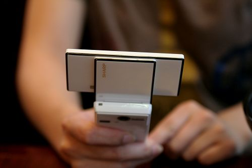
“味千拉面”的服务生。

最爽的时刻 @ Jul 09, 2009
我爱这画面中的一切；
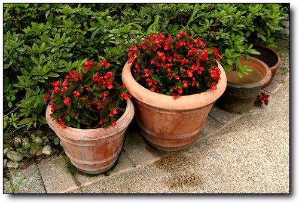
夏天狗狗掉毛很严重，半天地面就象长上了小草坪。不得不把Luke的长卷毛都修掉，成了光猪壮士，体型更健美~；

夏天戴小红帽的狗狗；

每天下午下班回家的路上，有种小鸟展翅飞翔的感觉，最近车上在听“Short List”的CD，只有三四首不喜欢，每每跳过去听其他所爱。就这样打开天窗，放下门上的窗户，一路听着音乐吹着风往家开，终于又度过了一天，好象这一生特别漫长，下班的路上是人生中最爽的时刻。
最爽的应该还有每年的休假时间，去年因为种种原因没有安排外出休假，今年卯足了劲儿准备等到秋季，那时正是澳洲的春天，jiajialing说可以请假带我在澳洲转一圈，打算租辆车从悉尼开到墨尔本，虽然在地图上是很短的距离，也会有段难忘的旅程！在放弃五月西藏自驾游，Sherry新疆之行的邀约之后他工作开始忙了，这时候改变计划实在是有些郁闷。。。其实什么时候去那儿都可以，就象yucheng一样，那里反正有人，也不会从地图上消失的。说到yucheng，有意思的是她所在的英国公司在经济危机中倒闭，上海的公司也随之关门，她在这家公司工作了十几年。当别人忙于寻找新工作，她却跑去肯尼亚半个月自由行。“一切等回来再考虑”她说，就这么简单？
夏季的夜晚跑步是否也很爽？浑身大汗淋漓，还有两只狗狗作伴，一只拉布拉多，一只英卡。跑着跑着它们就趴在草地上休息了，不是累是太热了吧？夏天少有机会出汗，白天在办公室，回家路上有空调，到家还是空调，能大把大把出汗。。。。很爽的。。。。
复杂动物 @ Jul 09, 2009
A、人类真是复杂的动物，也许我这个年纪不应该被复杂所困惑。
人们转身憎恨，迎面殷勤微笑，象木偶表演一样没有情感成份。
如果喜欢就是喜欢的表现，不喜欢就是不喜欢的表现，关系未必就会简单起来。但心一定不会那么累吧？
B、临桌的四人中有个中年妇女从坐下用餐开始，便喋喋不休地操着非常纯正的普通话与同桌的人分享她的社会经验，分析社会现象，有着江山在她纤纤细指下该哪儿是哪儿的功力。声音响亮而肆无忌惮地塞进周围的耳朵里。用餐就要结束，而她仍然精力充沛翻动着两片嘴唇，她的先生在她的数落与鄙视下愤愤离场。
这个女人有着一切美好的外表，以及充满魅力的声调和口音，词汇运用与搭配俨然是受过良好教育的表现。可我看到她是那么不平和，那么的争强好胜，以自我为中心，不容被忽视。。。
每每看到这样的人，我的心就感到累。
究竟她的内心有哪些需要安抚与平衡的部分呢？
夏日街头：鼓楼 & 北门桥 @ Jul 08, 2009
夏日炎炎，空荡荡的三轮车，双重压力；
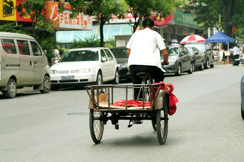
清凉夏装。美美的后背多了两条透明带子；

虽然MM们穿着裙子，看上去还是很热；

如今买卖废品和小白领收入差不多，甚至更多；

外地来的一家人，从高到低；
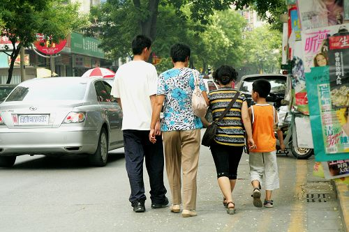
这哥们儿真摆，弄一沙滩摩托车上街拉风，还没有牌照限制；
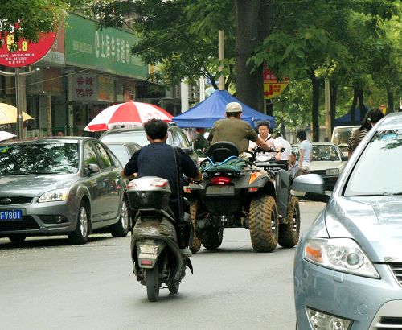
睡衣永远是中国街头特色；
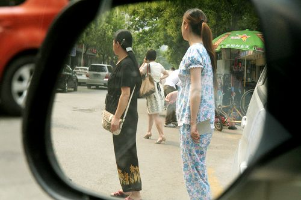
中国多的是环保人士。
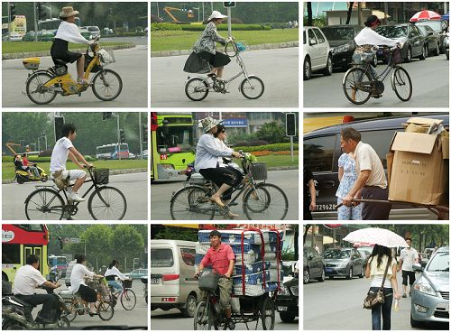
继续上照片 @ Jul 08, 2009

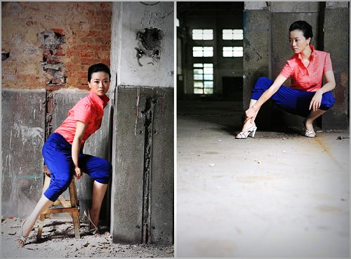
看电视 @ Jul 07, 2009
午饭时间打开电视，新闻综合电视台在放《半路夫妻》。瞟了几眼发现有些场景是在南京拍的，比如富城会，比如颐和路....超喜欢孙红雷的演技，还有他的小眼睛。好多年前在湖南路美食街遇到过他，当时他穿着橘红和黑相间的野外风衣，黑裤子，戴着黑墨镜，和一个中年女人走在一起。我和旁边的朋友说“孙红雷”，说完我回头看他，他居然也回头看了一下。对呀，每个人对自己的名字是最敏感的，即使已经擦肩而过，也能听见哦。
刚看完一部电视连续剧，不想再看连续剧了。每天晚上等在电视机前，什么也不能做，特别浪费时间。老爸却打电话来问我是否看XXXX电视剧？说特别好看，已经演到21集了，要我晚上看看。不看不看！看了就停不下来了。
最近常常看电视，不过还是不能等到夜间12：30的MJ的葬礼直播，看转播吧。凤凰台背景台词是“让我们一起送他最后一程...”话音刚落我的喉咙一紧，鼻子一酸。没有什么明星是我特别迷恋的，会喜欢某些明星的作品，喜欢他们的表演形象，迷恋的还谈不上。MJ是20世纪最伟大的巨星，作为这样一个角色，大多数人无论喜欢与否，投以关注是再正常不过的现象！
多灾的夏天 @ Jul 07, 2009
好象打了一夜的雷，下了一夜的雨。早晨的天色跟傍晚似的黑压压一片。到处积水、到处堵车，雷声响起落在地上，不是天上在打雷，而是地下在敲鼓。一道闪电就在左脸旁边，那么近那么近。喜欢在这样的天气里开车，四驱发挥了极大的作用，堵车也不那么无聊了。刚收到别的公司发来的邮件“各段交通路上严重堵车，导致我司各业务现场交接班车都无法准时到达现场包括（禄口机场、龙潭、龙潭物流园、出口加工区北区、 江宁办、出口加工区南区），严重影响了上午的办公......”这么大的雨，高速也积水了。
09年的夏天是不是很多灾？
昨晚金盛路上群众自发哀悼630车祸中逝去的5人，又宽又长的路边点起一排排蜡烛，摆放着花圈和鲜花，之后天空响起震耳的雷声，一直到现在。
给在乌鲁木齐的哥哥嫂子打电话，知道他们一切平安才放心。发生暴力的四个地点中的大巴扎是闹市区，卖民族工艺商品的地方，恰好旅游旺季，游客从山里返回乌市会到这里采购纪念品，晚上8点左右正是人群聚集的时候，惨剧发生了....发生暴力事件的当晚，据说死了3人，昨天下午升至140人，今早新闻说遇难者达156人......无辜的群众莫名其妙地惨死在歹徒的棍棒和屠刀之下.....这些叫嚣着民族独立的反政府份子都是因为个人私利，所谓政治的丑陋是和个人的丑陋联系在一起的，理由冠冕堂皇！为什么不愿意过好日子呢？
杂七杂八的周末 @ Jul 05, 2009
积累了一周的脏衣服，周末用了半个下午清理。手洗了冬天的两件羊毛衫和换下来的真丝衣裙。以前图省事真丝衣物基本放在洗衣机里洗，这次在网络上google了清洗真丝衣物的方法，这才发现还需要购买中性洗涤剂或专门的丝毛洗涤剂，以及晾晒毛衣的篮子。晾晒完衣服，整个房间里都充满洗涤剂的芬芳，心里立刻清新起来。
虽然处于梅雨季节，却少有雨水，天气热懒得买菜做饭，周末的午饭都在外面解决了。前后两天的饭店都在珠江路金鹰天地对面的龙世中心大厦的楼上。周六在“魔石泡泡鱼”吃的，点了招牌菜香辣鱼，草鱼48元，点了黑鱼加10元，味道和一般的川味火锅没特别大的区别，但是这里打的却不是川菜的招牌，打的是长江里的石头的招牌。吃的是个新鲜，新鲜在哪儿？新鲜在它的做法。居然吃饭的时候远远看到集团副总裁带着家小在对面用餐，见他起身两次朝这里张望，犹豫之下我还是没去打招呼，低着脑袋吃，装作没看见。
大楼外立面“魔石泡泡鱼”的店牌，午餐6.7折，晚餐7.8折，车可以停在大厦后面的停车场，餐厅会提供免费停车券；

据说是长江附近的石头雕凿出来的石锅，锅两边的把手可能是龙头，看不清楚；

锡纸上面是锅底，下面是烧得滚烫的400度的石头；
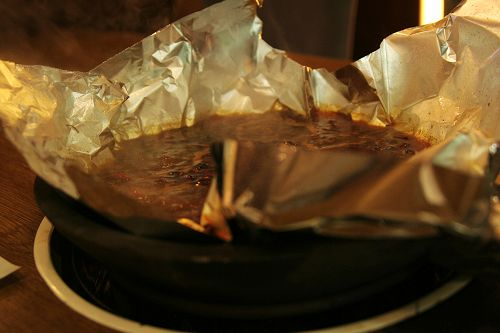
将用料腌制过的黑鱼片下到汤里煮3分钟；

之后将锡纸抽走，整个内容与石头融合在一起，汤沸腾出许多泡泡，这就是魔石泡泡鱼的由来。
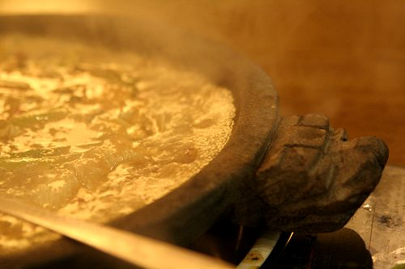
饭后来一杯冰的榛子卡布奇诺。有个小插曲，店员送上一杯冰拿铁，我刚喝一口，店员跑来说做错了，取回更换了榛子卡布奇诺给我。哎呦，多可惜啊，那杯拿铁就这么白白倒掉吗？不如免费送给我好了。

周日还是在这栋大楼里用的餐，2楼的“巴贝拉意大利休闲餐厅”。
因为靠着金陵中学和南大，学生特别多。宣传单上的价格真的很有吸引力，图片也很诱惑你的味觉。体验了才了解，食品的份量均比以前我所吃过的类似的餐厅要少。餐具显得很寒酸，尤其吃甜点和冰淇淋的勺子...重复使用的餐具，既然不是一次性的，为何不能稍微增加点成本购进些手感更好的呢？这样也能提升餐厅形象啊。吃到后面，我的耳朵快要受不了了，感觉坐在菜市场里吃饭呢。以后再也不来这家餐厅了！
三个人吃完支付了203元，看着价格是便宜，其实不然。那个9寸的披萨大约19元，是很便宜。不过这里不是享受味觉的场所，是让你填饱肚子的地方。

四个女中学生各点了一份饭，一起吃了个9寸披萨。
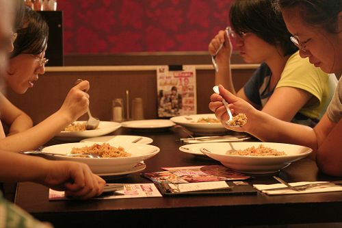
餐厅几乎坐满了人，其中肯定有象我这样受到宣传单诱惑，贪图便宜的客人。又一次应验了便宜无好货，一分价钱一分货的真理。到这里吃饭首先要端正心态，我是来吃快餐的。其次要象女学生那样吃才划算，为着吃饱肚子的可以选择这家餐厅。回头想想这个价钱在“悠仙美地”可以吃的更开心！
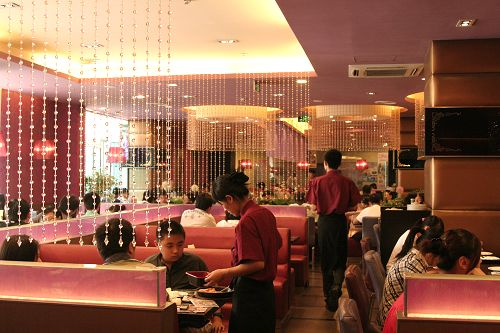
餐厅的墙纸是玫红色的花朵，硬件设施象模象样，可惜软件差了点，连刷卡机都没配。

这件上下连起来的裙子，可以当半截裙穿，也可以作为抹胸连衣裙。为了安全起见，我在胸部上系了根细细的腰带，将针织挽起一道边盖住它。我这两条肥胳膊再也找不到二头肌啦~~
常常上班饿的时候和Maggie稍稍讨论一下我们共同爱好的美食，交流一下好吃的饭店。我觉得她有小小强迫症，又要我给她一个list，这是第二次布置作业给我，为什么？为什么啊？这次我拒绝了，我说你先给我，不能总是要我分享资源吧？人家答应得可快了~不过就交流的内容来看，我们喜欢的饭店大部分相同哦！看到她居然真的跑去吃我推荐的两个餐厅：新天厨和个中东西，前者更讨她欢喜，招牌菜是膳片。后者我也只是喜欢吃那个山药而已。她写“这个懒鬼每个餐厅就告诉我其中一个字，让我摸让我寻。”罪过罪过，我只记位置，店名什么的一般不仔细看，以后注意。
保守计算，每周吃一个饭店，一年下来吃过南京48个饭店。也不错啊！其实对自己居住的这座城市并不十分了解，活动区域很有限，为什么这么说呢？周五我定的《时尚旅游》第7期到了，这期居然介绍了南京，标题是“南京那些事儿”：
1、紫金山 汤山温泉
2、幕府山-窑上村 2007年幕府山画家村成立并进驻几十位先锋画家；
3、南京大屠杀纪念馆；
4、1912街区；
5、金陵刻经院-很少有人知道此院：淮海路与延龄巷街口；
6、晨光1865创意园；
7、明孝陵-壹咖啡：中山陵风景区明孝陵金水桥旁东侧；
8、朝天宫；
9、夫子庙；
10、鸡鸣寺。
其中有杂志的推荐，粗略分为风景、美食和会所。美食推荐了1912的茶客老站、粤鸿和、清凉山凤凰会馆、珍膳舫和美木龙虾。这里面我只去过茶客老站和粤鸿和，其余三个没去过，要找机会去吃一吃。南京人提到龙虾当属星湖饭店的龙虾又干净又好吃，除此之外有名气的还有龙妹和杨四，这个“美木龙虾”倒真没听说过。几周前南京城市频道的《新闻夜宴》讨论龙虾用“洗虾粉”清洗的危害性，一般小饭店为了快速让龙虾变得漂亮基本会用洗虾粉清洗。而大的饭店，比如星湖饭店，专门研发了一套清洗龙虾的流水设置，所以品牌还是有一定信任度的。否则砸了牌子丢了钞票啊！
会所仅推荐了“廿一会所”，看了杂志才晓得，之前一点不知道，真是惭愧呢。google了下，这个会所除了招聘信息之外，没有自己独立的网站介绍。目前好象还处于试营业状态。据说会所里移植了400多年的老戏台，梅葆玖等名角曾经在此登台亮相。经过全新打造，入口处以最新媒体科技，投影出两尺见方的锦鲤戏水图，而且图象轻盈流动。戏台金碧辉煌，三面临水，夜光点亮后宛若不真实的仙境。《牡丹亭》被缩编成两小时，每夜娓娓唱来，舞台背景同样采用最新的多媒体，为著名画家马德的多幅水墨数码画前后翻篇而成，不同场景，不同的画面，这样的舞台布置，在国内昆曲演绎中是惟一的。
杂志上写的10个地方，我有三个地方没去过，去过也未必等于熟知，所以，旅行无处不在，即使是在自己居住工作的城市，还有许多待开发的地方等着被了解和感受。
我爱美食 @ Jul 03, 2009
这是位于太平南路科巷12号的饭店：香锅里辣。
除了龙虾，下面的菜都喜欢，尤其是豆腐、腰片和酒酿赤豆元宵。
水果日本豆腐
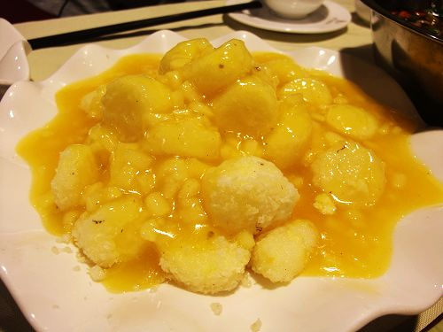
五色蛋卷

猪腰片

酒酿赤豆元宵

龙虾

如何可以不在乎 @ Jul 02, 2009
首先我认同她的观点，其次在括号里加入了些自己的感受。
转自：北京女病人
人的自尊心真是个奇妙的玩意儿，有时它表现为一种表里如一对自己的自尊自爱，有时则是为了掩盖内心或外在虚弱不足的部分。所以，当种种情形混杂在一起的时候，我们就很难判断一种真实的情况存在。只能举例说明：一个人身体机能比较好的时候，他是不太容易被感染感冒病毒的，也不太容易吃了不对的东西就导致腹泻；那么一个人的生活状况比较好的时候，他也不太容易被旁人的评判和流言蜚语所影响。在论坛上有句著名的话是这样说的：假如你知道批评你的人的生活状况是什么样的，那么你就根本不会在意他们说了什么。（不论别人评说什么，还得看看这个人是什么鸟，出于何种心理，不是吗？）
爱情也是。我们经常可以看到朋友们凑在一起私下评论自己好朋友找的男朋友是什么样的：从相貌气质、审美品味到经济状况或人品。女人们总是有一种代入感，然后会自我得出结论，这个男人是否适合自己的好朋友。（一般我的做法是在女友问起时评价一下，只要女友接受，即使心里有想法也会支持他们的交往。在她受伤的时候，出现在她身边。）当然，这样的评论有时是不好让闺蜜知道的，因为毕竟不是每个人都喜欢听好朋友评论自己的爱人。我身边就有这样的很多例子，因为女朋友们都不喜欢自己千辛万苦找到的男朋友，所以搞得大家都没法见面和一起玩耍了。这种事情我觉得多余，毕竟那是别人的生活。可是有时又很无奈，你看到你的好朋友遇见了一个“不对的”男人，从此沉沦憔悴下去，总是忍不住想发表一些言论。可，话又说回来，要是他们的感情足够好的话，其实他们是根本不会在意你说了些什么的。
每个人都有自己的短处，并且未必愿意被人评说。就好像你对一个真正的美女说“你真难看”，她基于自信和客观现实只会把这句话当做玩笑，但如果你对一个相貌普通的女孩子讲这个话的时候就要格外谨慎，因为她可能本身就不自信，你还要戳到人家的痛处，那是相当不厚道的行为。就好像俗话说的“当着秃子不说亮”那样，你不能当着没钱的人说他穷，不能当着感情本来就忐忑的情侣说他们不般配……这是一种对人家自尊心的打击。（要不怎么说真正的美女性格总是好过那些相貌平庸的女子，而做真美女的女友，这个女友的性格和心理更会是非常健康的。）但，何尝不是一种真实的评论呢？我们总结了一下，人往往越是不如意的时候越是敏感，假如你的生活足够好、内心足够强大，那么你就可以坦然的面对各种纷纷扰扰的评论和流言不为所动，你就可以追求自己内心真实的欲望。这难道不是我们一直想要的某种境界吗？
所以我的朋友开玩笑说，现在“不要脸”简直成了一句夸奖人的话了。因为你拥有的东西越多，那么你不在乎的东西也就越多。如果你生活中充满了各种不自信和缺憾，那么你就总难免会在意别人无心的评论。就好像你自己都不相信这段爱情可以天长地久的时候，你对自己的爱情都没有信心的时候，倘若别人再不负责的说你们是不合适的，那么就太容易勃然大怒或暗自纠结了。
是．否 @ Jul 02, 2009
拍摄于7月1日

一直以为自己对人生是有想法的人，挫折愈多想法愈多。晚上和朋友吃饭，席间听他讲职场总结及事业发展，果真人在34岁和24岁想法会不同？24岁他是一个销售，34岁发展自己的公司。
当拥有安全且稳定有序的生活，我尽然沉浸在琐碎的每一天中自得其乐好长时间。这样过下去是不是会跌入庸俗生活的深渊，庸庸碌碌一辈子？此时，我怀疑是否对自己判断的失误，真不知道我是有想法还是没想法的人？不可否认，想法多的人更痛苦，不是吗？现在的生活则让我感受到更多的快乐，感慨也渐渐少了。换作以前，我会内疚会指责会审视自己，自己对自己说：“你怎么可以这样思想苍白平庸，你怎么可以这样肤浅地生活，你怎么可以没有想法？！你得想点儿什么或做点儿深刻的事情......”
深刻？带着气质和境界？所以我常常不自觉受到貌似深刻的人或事的吸引和影响，纠结在深刻中一探究竟。这是24岁到32岁之间的想法，这期间我总想与众不同，自命清高，对许多事情概念化，挣扎了那么多年。32岁之后仿佛一夜之间就变化了，是不挣扎在先？还是状态变化在先？那些所谓深刻的人和事变得不重要，甚至会刻意远离“深刻”，减少痛苦和纠结。那么，是否拥有有价值的人脉关系，是否拥有事业或可望得见的职业前景，是否与深刻的人做伴，体味深刻的思想和心理等等等等，这些都变得不再重要。现在，最重要的是健康和快乐。
也许，女人和男人真的差别很大？
我也知道，安逸是有风险的。
纪念黄家驹2009现场演唱会 @ Jul 02, 2009
晚上朋友共三人去江南剧场看演唱会。以为是地下摇滚乐队演出，到了才知道是纪念黄家驹的。由于对此孤陋寡闻，才了解南京纪念他的演出每年一次，坚持了多年。晚上的演出共有两个乐队，一个是飞扬乐队，一个是拉丁酒吧的驻场乐队。组织方是江苏演艺集团。
大部分演唱的是BEYOND的歌曲，其中有两首“飞扬乐队”原创歌曲，我个人比较喜欢第一首《FLY》，轻摇滚风格。不过说实话创作过于传统，演唱方式也很传统，音乐元素单一，想起2007年在上海看的"Linkin Park"演唱会，这个乐队的风格不完全是摇滚，也包含了饶舌、DJ等元素，作品也就更吸引人。做音乐是一种信仰，可能需要很多年很多年的积淀，最后是否能爆发出能量，还要看运气，还需要有生意头脑的人帮助乐队把握市场。
回家路上我在想，如果这些乐队不演唱BEYOND的歌曲，他们的音乐之路会是怎样的前景？面对怎样的群体？只有坚持创作，熟悉大量音乐新元素，适应市场需要，才能让乐队走得更远，实现对音乐的追求。总是演绎他人作品，永远是follow的角色，路只会越走越窄。不过南京终究比不了北京的文化氛围，想搞音乐应该去北京？南京除了氛围不够之外，对音乐的宿求与需求层次也有限，那么唱唱老歌，让观众在怀旧的情绪中投入对他们的关注。当然，无论音乐处于怎样的表达形式，都会有它所对应的欣赏群体，不可否认，今晚的演出还是很精彩的。


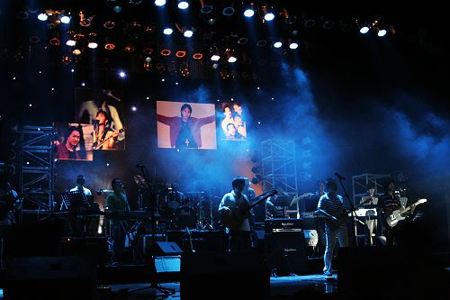
演出前的后场。

这哥们儿穿的Quiksilver体恤，和外贸公司的原单一模一样。
南京艺术学院吉他教师。

眼睛高度近视的歌手“小林”。
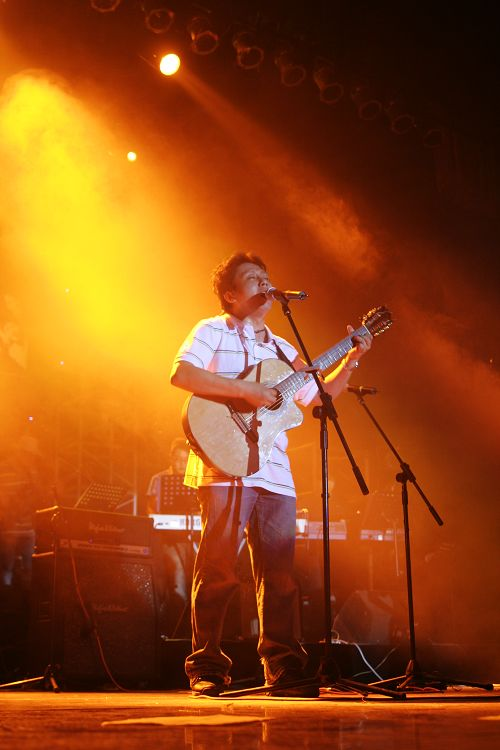
主唱兼吉他手“陈勇”。
观众还是很火爆滴~

为了看演出，放弃今晚三集电视连续剧，55555~~~我觉得看连续剧就象磕瓜子，一旦磕上就很难停下来。Sherry认为这是老年人的生活方式，应该用电脑下载的看....为了看演出，我还特地换了牛仔裤，做观众做的认真啊。
演出间隙在后台互拍。这家伙才从新疆采风回来，据说高点儿的草都被牛羊吃了，只好趴在地上拍草坪，这次旅行比较辛苦。回来倒是没见晒黑多少。
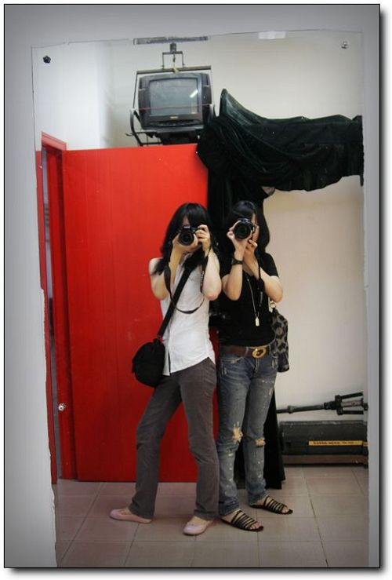
挤牙膏 @ Jul 01, 2009
每天跟摄影师要一两张照片，挤牙膏啊挤牙膏~
照片没编辑，凑合着先看看。


太惨了 @ Jul 01, 2009
昨晚8：20左右南京江宁区岔路口金盛路发生了交通事故，5死4伤，非常惨，其中有个孕妇肚子里的孩子都被撞出来了，据说是个男婴.....昨晚得知武警封锁道路将近半小时。
居住在附近的同事说，夜里能听见外面哭泣的声音，想必是那些受害者家属痛不欲生了一夜。肇事车为苏ATH900的别克君越，车主姓王，在检查院工作。王某已将车卖给张某，但未办理过户手续。那么发生车祸车主要承担连带责任。而谁是肇事司机目前还不能确认，有消息说是张某的另一个男性朋友。无论是谁，酒后驾车连续撞死5人撞伤3人，应该判处死刑！！！否则还会有源源不断的人酒后驾车！有一朋友说枪毙不过瘾，应该凌迟，可以让老百姓剐上几千刀。
早晨google了一下，发现现在的媒体报道新闻非常不严肃，有写事故发生时间是晚上11点，有写肇事司机是检察院、高尔夫俱乐部副总或房产公司技术副总等等...新闻内容可以是未经确认的信息吗？
想起我父母经常叮嘱：不要主动邀请人家乘坐我的车，如果出了事故，车主要承担相应的责任。还有尽量不要将车借给别人开。还好我没有“借车”这么不靠谱的朋友。